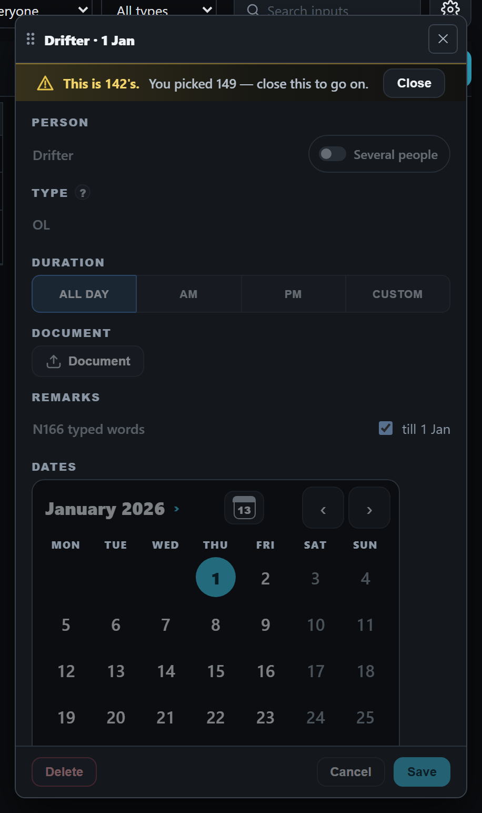
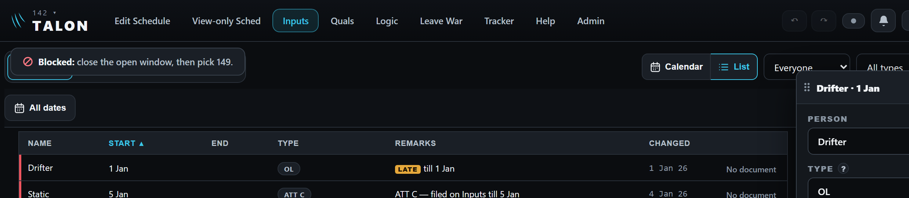
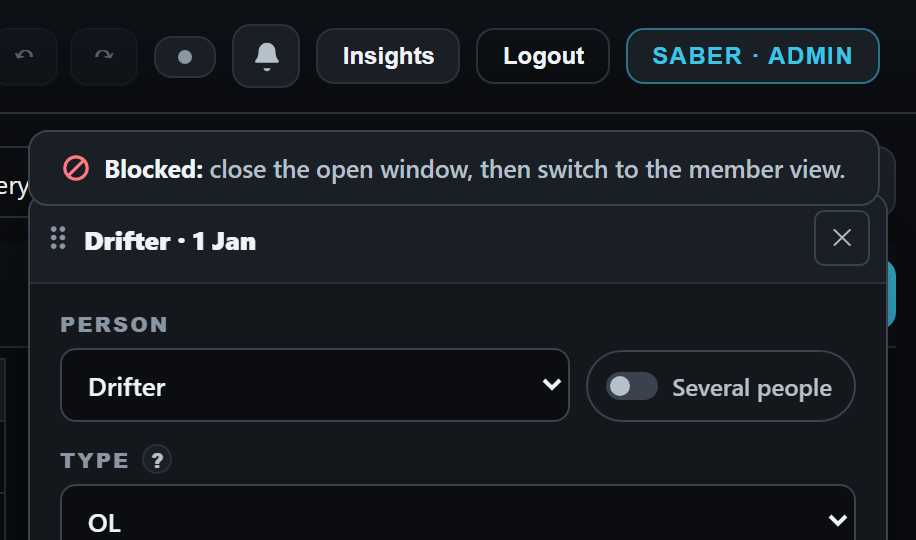
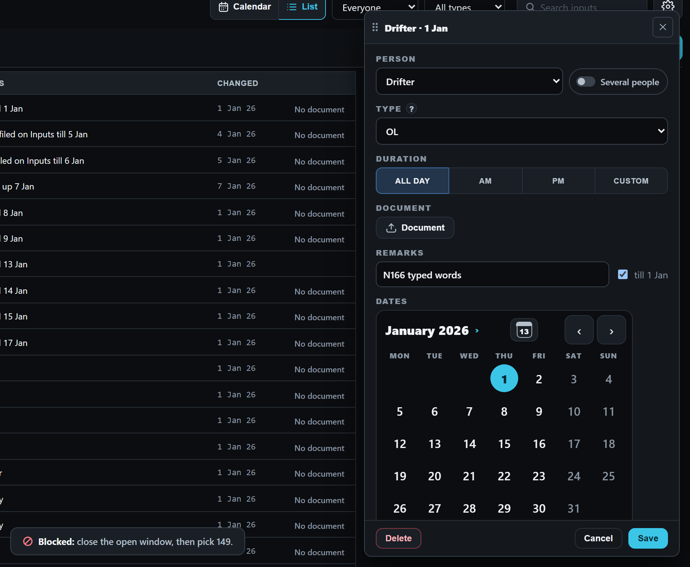
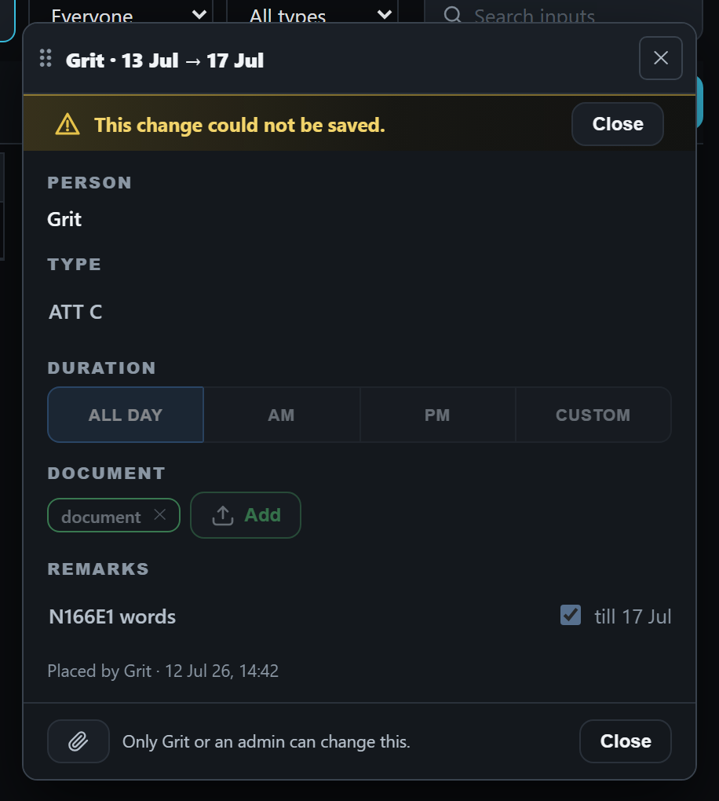
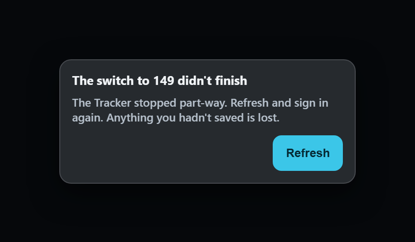
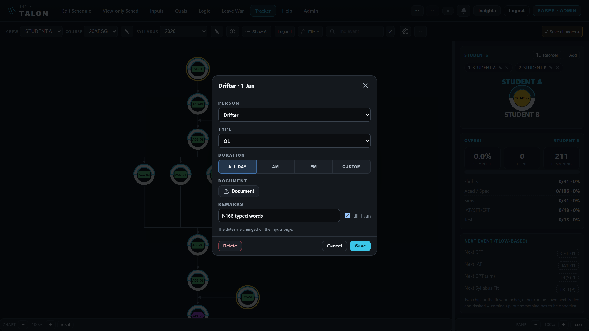
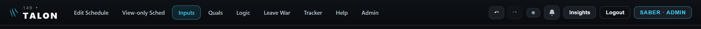
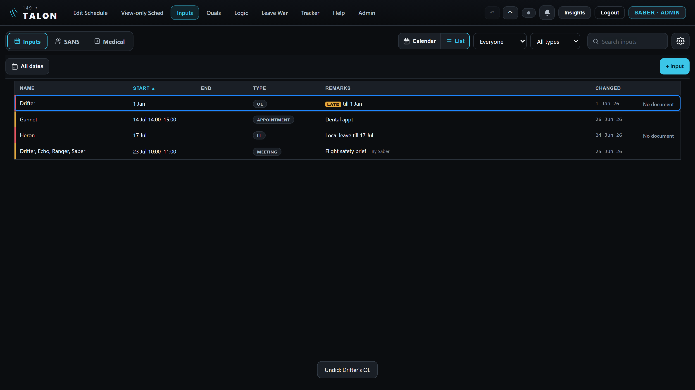
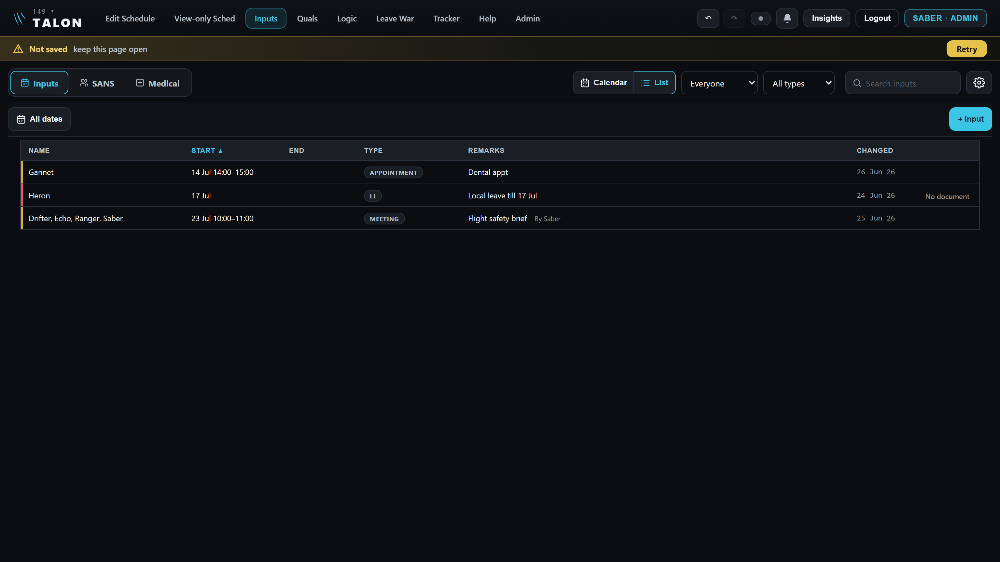

The guard rail at a squadron switch
Your rulings: while a window is open, picking another squadron or switching to or from the member view is refused, with a note to close the window first. When the squadron in view or your rights change without your press, the app stops under one note with a Refresh button. Every picture is the real app. "Today" is what happens now; "After" is the note drawn on top. Tap a picture to enlarge it.
To answer now, newest first
- The refusal note: "Blocked: close the open window, then pick 149.", drawn under the control you pressed. Recommended: as redrawn.
- The refresh note: a card in the middle, one Refresh button. Recommended: as drawn.
- Logout with a window open: recommendation changed. Recommended: Logout is not refused; it asks the window's own question first, then the Tracker's, one at a time.
- Undo after picking another squadron: today it undoes 142's change while you are on 149. Recommended: Undo reaches only the squadron you are looking at. A simpler choice added.
- A change that did not save, then a pick: today Retry on 149 saves 142's change. Recommended: refuse the pick until Retry has saved it. Its cost and its reach added.
- New: typing on Admin → Users, then a pick: today the words are lost without asking. Recommended: the guard refuses the pick, as for a window.
New since you last looked: each question now says first when it happens in real life (your ruling of today on another chat, D2439). A fresh Fable checked every recommendation against all your rulings, the newest included, and found none overturned. It found the costs and cases now added below.
1. The refusal note
When this happens: an admin who also holds rights in a second squadron (a Plan of 149, or a master admin) is in the middle of an input, a Leave War window or another window, and picks the other squadron or switches to the member view without closing it first. It touches only people with rights in two squadrons. For them it can happen any day they work across both.
Example: an input of Drifter's is open with words typed in it, and you pick 149. Today the window greys out and says "This is 142's. You picked 149 — close this to go on." After: nothing changes and the window stays live with your words in it. The app's usual grey note appears right under what you pressed.
Redrawn as you asked. On a desktop the note now drops down under the control you pressed, not at the foot of the screen. On a phone it stays at the foot, near your thumb. It is a passing note that fades after a few seconds. While it shows, it covers what is under it: the Inputs tabs in the first picture, and the top edge of the open window in the second. The window's ✕ stays clear.
Pick a squadron: Blocked: close the open window, then pick 149.
Switch to the member view: Blocked: close the open window, then switch to the member view. (Back: "…then switch back to the admin view.")
A bell line that leads to the other squadron: Blocked: close the open window, then press this line again.

Today: desktop, an input open, 149 picked.

After: still on 142, the window live, the note under the squadron picker.

After: the badge pressed for the member view. The note sits under the badge, touching the window's top edge.
 After, bell line: the note is wider than the bell list, so it sits just under the list.
After, bell line: the note is wider than the bell list, so it sits just under the list.
 After, phone: My leave open, 149 picked from the ☰ list. The note runs across the foot.
After, phone: My leave open, 149 picked from the ☰ list. The note runs across the foot.

Round 1, set aside: the note at the foot of the screen, far from the picker.
Words drafted by Opus and adjusted by a fresh Fable. The note says "the open window" rather than naming it: an input's title ("Drifter · 1 Jan") reads badly in a sentence, and the window is right in front of you. On a phone an input window covers the squadron control, so the note will mostly appear on a desktop.
 Also coming, already ruled (not a question): unsaved Tracker chart edits are now asked about at the member-view switch too. Today nothing is asked there.
Also coming, already ruled (not a question): unsaved Tracker chart edits are now asked about at the member-view switch too. Today nothing is asked there.
2. The refresh note
When this happens: rarely. (1) A man posted to another squadron has the app open as midnight passes on the day his posting starts: once a posting, and only if the app is open at that moment. (2) An admin takes away one of his rights (a Plan, the master admin switch) while he has the app open: now and then. (3) The Tracker fails partway through a switch: a fault, not a normal day.
Example: you are moved to 149 at midnight while an input is open. Today the window greys out and says only "This change could not be saved." After: the whole app dims, and one card in the middle asks you to refresh. It has one button, Refresh. Anything not saved is lost, and the card says so.
Your own move at midnight: You are 149's from today. "Your move to 149 took effect at midnight. Refresh and sign in again to carry on. Anything you hadn't saved is lost."
A right taken away: Your access has changed. "An admin changed what you can do here. Refresh and sign in again to carry on. Anything you hadn't saved is lost."
The Tracker failing partway through a switch: The switch to 149 didn't finish. "The Tracker stopped partway. Refresh and sign in again. Anything you hadn't saved is lost."

Today: after midnight, the input greyed with "This change could not be saved."
 After: the card over the dimmed app.
After: the card over the dimmed app.
 After, phone
After, phone

After, Tracker: today's page has no button at all. The "Reload to try again" behind the card goes once this is built.
"Sign in again" is there because in this build a refresh brings back the sign-in screen. Once the app is in Power Apps there is no sign-in, and the words become "Refresh to carry on." A right taken away in another tab is not noticed in this build until a reload. It will be once the database is in.
3. Logout with a window open
When this happens: anyone at the end of a session presses Logout with an input or Leave War window still open, often on a shared desk computer at the end of a shift. It can happen any day, to members and admins alike. Unsaved chart edits as well are rarer: only a Tracker editor.
Example: an input is open and the Tracker has unsaved chart edits. You press Logout. Today the app moves to the Tracker and asks "Save them before logging out?", but the input window is drawn on top of that question, so you cannot press Discard until you cancel the window. On a phone the ☰ menu is under the window, so Logout cannot be reached at all.
Recommendation changed. Last round I recommended refusing Logout with the grey note. The check found two costs. First, your guard-rail ruling said Logout keeps today's handling. Second, the note fades in a few seconds: a man who presses Logout and walks away from a shared computer is left signed in, believing he is out.
Recommended now: Logout is not refused. It asks the open window's own question first ("Close it and lose them?", the one ✕ and Escape already ask, D1622), then the Tracker's question, one at a time and never one on top of the other. A question stays on screen until it is answered, so a man who walks away sees that he is not yet logged out when he comes back. On a phone, Logout gets a way to be reached with a window open, which today it lacks.
The other ways: (a) refuse Logout with the grey note, my earlier recommendation, with the walk-away cost above; (b) Logout closes the window and loses its words without asking. That is quickest, but it throws typing away.

Today: desktop. Logout pressed, and the input window stands over the Tracker's question.
 Today, phone: the ☰ menu is under the window.
Today, phone: the ☰ menu is under the window.
If yes, the note's words are drafted and checked, then drawn, before it is built.
4. Undo after picking another squadron
When this happens: someone with rights in two squadrons changes something on 142, picks 149, and then presses Undo, perhaps meaning a 149 change or forgetting he moved. Rare: only people with rights in two squadrons, and only in that order.
Example: on 142 you change Drifter's OL, then pick 149. On 149 the Undo button still offers that 142 change. Pressing it undoes 142's record while you look at 149, and the bubble says only "Undid: Drifter's OL". Drifter's row even appeared in 149's list afterwards.
Recommended: Undo and Redo reach only the squadron you are looking at. Your 142 steps wait, and are there again when you pick 142. On 149, while you have made no change there, Undo is greyed. Its words say why: "Your 142 changes are on 142's Undo." (Those words are a draft, checked before they are built.) A change to someone's access, such as "Plan of 149 given · Hunter", belongs to the squadron it was made on.
The other ways: (a) simpler: the Undo list empties when you pick another squadron, as it does at Logout and after a reload. It is the fewest moving parts, but your 142 changes can no longer be undone when you come back. (b) Keep one list and name the squadron ("Undid: Drifter's OL · 142"). But then you undo something you cannot see.
Not yet pressed: the Tracker's own Undo after a pick. It is part of the build's walk.

Today: on 149, before Undo.

Today: after Undo on 149. Drifter's 142 row shows in 149's list.
5. A change that did not save, then a pick
When this happens: a save fails, which today happens only when the browser refuses to store. Once the database is in, it will happen when the connection drops. The person then picks another squadron before pressing Retry. Rare: someone with rights in two squadrons, at the moment a save has failed.
Example: you save a 142 input, the save fails, and the band says "Not saved — keep this page open" with Retry. You pick 149 anyway. The band and its Retry follow you to 149, and Retry there saves 142's change.
Recommended: refuse the pick while a change is not saved, with the grey note asking you to press Retry first. That keeps the unsaved change and the squadron it belongs to together. Today the save does reach the right record, but nothing on 149 says it is 142's.
Its reach: the switch to or from the member view and a bell line to the other squadron are refused the same way. Logout asks, as in question 3: "This change isn't saved. Log out and lose it?" (a draft). The "Not kept" band, shown in a browser that stores nothing at all, has no Retry and never blocks anything. Its cost: if Retry keeps failing, you cannot leave 142 until a save gets through or you refresh, which loses the change. That is what the band's own words already ask: "keep this page open". The note will not say "Not saved", since those words are the band's alone.

Today: on 149, with 142's "Not saved" band and Retry.
 Today: after Retry on 149. 142's change is saved.
Today: after Retry on 149. 142's change is saved.
6. New: typing on Admin → Users, then a pick
When this happens: an admin with rights in two squadrons opens a person's row on Admin → Users, starts changing the sign-in name, and picks the other squadron before saving. Rare.
Today the row closes and the typed words are lost, with nothing asked. Not a window, so the guard as ruled does not cover it.
Recommended: the guard treats an opened row with typing the same as an open window: the pick is refused with the grey note ("Blocked: close the open row, then pick 149.", a draft). The other way is to leave it as today.
Also found when every case was pressed
These need no answer now. A SANS day window stays open after a pick and quietly shows 149's figures under the same date; the guard will refuse that pick. A day's note typed on Edit Schedule and then a pick keeps the words in 142's note box, where they were typed. With a Plan taken away in another tab, the open tab never notices and can still save on 149. This build has no live link between tabs. Once the database is in, the refresh card in question 2 covers it. The bell's OIL line opening another squadron's input is a fault already filed, with its own fix in this batch. Coming next, in its own round: the Tracker drag questions, drawn first.